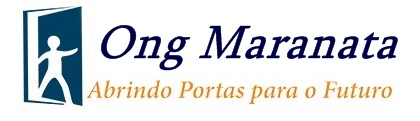

Objetivo Geral
- Descobrir o princípio alfabético, isto é, descobrir o fato de que as palavras são formuladas por fonemas (sons menores do que a sílaba) e que os fonemas, por sua vez, são representados por grafemas (letras)
- Aprender a decodificar, ou seja, aprender as relações entre os fonemas e os grafemas que os representam para extrair o som das palavras escritas;
- Aprender o princípio ortográfico, ou seja, as regras que regem a escrita das palavras.
- O desenvolvimento da consciência fonêmica é a base para a descoberta do princípio alfabético. Consciência fonêmica refere-se à capacidade de identificar os segmentos de som que formam uma palavra. Esses seguimentos se chamam fonemas. O método fônico é a maneira de alfabetizar através dessa conscientização.
Duração
Faça a sua inscrição
As inscrições sempre estão abertas. Venham Participar!